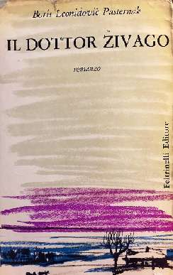
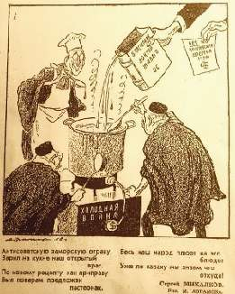

ПИСАТЕЛЬСКИЙ ГЕРОИЗМ
И опять про писателя. Теперь — про настоящий писательский героизм.
Он не такой, как у обычных людей. Не физический. Писатель может бояться мышей, темных комнат и хулиганов. Даже собственной жены. Но когда он пишет, он абсолютно бесстрашен — иначе это не писатель.
Однако бесстрашие еще не героизм. Многие литераторы в плохие российские времена писали что-нибудь бесстрашное в тиши своего кабинета и потом прятали поглубже в стол, на будущие времена.
Героические писатели — те, кто не боялись предъявить свое опасное детище миру. Или боялись, но всё равно делали это. Такие смельчаки в истории отечественной литературы были, честь им и хвала. Одни заплатили за свой мужественный выбор сумой, другие тюрьмой, третьи изгнанием.
Пожалуй, самый известный в мире пример российского писательского героизма — отчаянного, суицидального — связан с нынешней датой.
23 ноября 1957 года в миланском издательстве «Фельтринелли» вышел роман «Доктор Живаго». На итальянском. Тайно переправленный из СССР — словно какой-нибудь термоядерный секрет. Он и рванул так, что вскоре закачалась вся страна победившего социализма. В те времена советское государство боялось писателей и литературы.
Борис Леонидович в жизни вовсе не был храбрецом, он любил уединение и жизнь на даче. Но его решение выпустить книгу в свет — да не анонимно, а под собственным именем — являлось верным «литературицидом». Есть такой печальный термин, означающий «самоубийство посредством литературы».
Как вы знаете, Пастернака свирепо, собачьей стаей, затравили, заплевали, затоптали и довели до преждевременной могилы.
Лично я, собственно, и роман-то этот не люблю. Но какая разница? Героизм есть героизм.